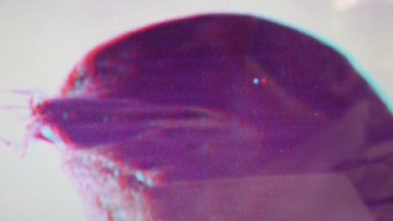

L´après-midi d´Augustine / Augustines Nachmittag

Evelyn Rüsseler aka Bear Boy
|
7 min – Deutsch, Französisch B+K+S: Evelyn Rüsseler aka Bear Boy – P+V: Beastie Prod.
|
sonntag 14 okt 20.00 werkstattkino
4380 Nachmittage verbrachte Louise Augustine Gleizes in der
Klinik La Salpétrière in Paris in Behandlung von Dr. Charcot. 12
Jahre lang (1873-85) verblieb sie in der Klinik und wurde zu
Charcots Lieblingspatientin, durch die er berühmt und zur Mode
wurde.
Der Arzt behauptete einen Zusammenhang von Hypnose (als Methode
bei Hysterikerinnen) und Photographie via den „Schock“ als
Auslöser einer therapeutischen Trance. Von 1880 bis 1895 erstellte
er eine der ersten photographischen Konvolute von PatientInnen. Es
ist davon auszugehen, dass sowohl seine Therapien, wie die
fotografische Dokumentation, als auch die Präsentation der „Fälle“
vor akademischem Publikum die Patientinnen belasteten. Charcot war
der Lehrer Freuds, der aus dessen Methoden die "talking cure", die
Gesprächstherapie der Psychoanalyse, ableitete.
Der Film entwickelt auf Basis der Charcot'schen Bildkonvolute in
Kombination mit lytographischen Bildern, die für die Traumwelten
und inneren Bilder der Patientinnen stehen, eine Annäherung an das
Leid, das Hospitalisierung, Therapie und permanente Verletzung
körperlicher Intimität bedeuteten.
Evelyn Rüsseler aka Bear Boy macht Experimentalfilme und Videos über Freunde, Tierverwandlungen und tote Dichter, schreibt Romane und performt die erdachten Tierfiguren. Sie lebt seit 2003 in Berlin, München und an der Ostseeküste. Diverse Kurzfilme. Sie ist seit der ersten Stunde UNDERDOX-Filmkünstlerin. |
| Films Notre Dame des Friches (for Piero Heliczer) 2017 (12. UX) – L´après-midi d´Augustine 2018 – Breath Death (disarmed) – Yoga für Frauen und Bären 2018 (13. UX) |